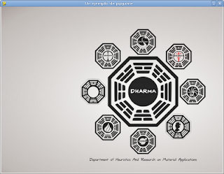

Jugando con pygame. Parte 1
Posted on dom 21 febrero 2010 in Tutorial Python • 1 min read
Hace tiempo tenía ganas de subir algunos artículos sobre pygame. EL primero que publicaré es una básico que carga una imagen en una ventana con un tamaño definido.
El código a continuación:
!/usr/bin/env python
# -*- coding: utf-8 -*-
import pygame
import sys
ANCHO = 800
ALTO = 600
#Iniciar pygame
pygame.init()
#Generar la ventana con el ancho y alto definido
screen = pygame.display.set_mode((WIDTH, HEIGHT))
#Cargar el titulo de la ventana
pygame.display.set_caption("Un ejemplo de pygame")
#Cargar la imagen de fondo
fondo = pygame.image.load('dharma.jpg')
#Se genera un ciclo que repinta la imagen de fondo hasta que se cierra la ventana.
while True:
#Se captura los eventos
for eventos in pygame.event.get():
#Si el evento es cerrar la ventana se sale de la aplicacion
if eventos.type == QUIT:
sys.exit()
#Se dibuja la imagen de fondo.
screen.blit(fondo, (0, 0))
pygame.display.flip()
La imagen a continuación muestra la ejecución del programa:

===
¡Haz tu donativo! Si te gustó el artículo puedes realizar un donativo con Bitcoin (BTC) usando la billetera digital de tu preferencia a la siguiente dirección: 17MtNybhdkA9GV3UNS6BTwPcuhjXoPrSzV
O Escaneando el código QR desde billetera: